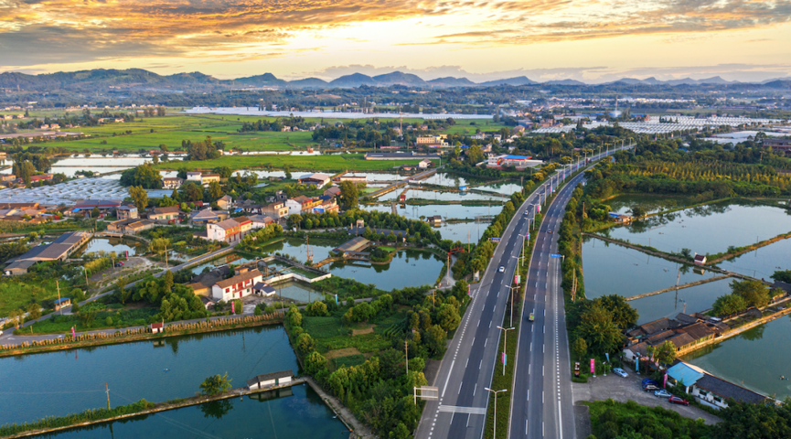

四川概况
来源：四川省文化和旅游厅

四川简称川，位于中国西南部，地处长江上游，素有“天府之国”的美誉。全省面积48.6万平方公里，居全国第5位，辖21个市（州）、183个县（市、区），与重庆、贵州、云南、西藏、青海、甘肃和陕西等7省（自治区、直辖市）接壤，有全国最大的彝族聚居区、第二大藏族聚居区和唯一的羌族聚居区。2023年，全省地区生产总值突破6万亿元、增长6%，地方一般公共预算收入增长13.3%，规模以上工业增加值增长6.1%，全社会固定资产投资增长4.4%，社会消费品零售总额增长9.2%。年末全省常住人口8368.0万人，户籍人口9071.4万人。
历史文化悠久。先秦时为巴国、蜀国之地，北宋置川峡路，后分置益州、梓州、利州、夔州四路，总称四川路，始有四川之名。为中国道教发源地之一，古蜀文明发祥地，全世界最早的纸币“交子”出现地，蜀锦、四川皮影戏等被列入联合国教科文组织非物质文化遗产名录。四川盐业文化，酒文化源远流长；三国文化，红军文化，巴人文化精彩纷呈；特别是以三星堆、金沙遗址为代表的古蜀文明璀璨而神秘，全国重点文物保护单位262处，省级文物保护单位1214处；国家级非物质文化遗产代表性名录153项、省级非物质文化遗产名录1132项。
自然资源丰富。拥有世界自然遗产3处（九寨沟、黄龙、大熊猫栖息地），世界文化遗产1处（青城山—都江堰），世界文化和自然遗产1处（峨眉山—乐山大佛）。国家A级旅游景区939个，其中5A级景区17个。大力推进发展方式绿色转型，美丽中国先行区建设成效明显，203个国考断面水质优良率达100%，长江黄河干流水质稳定保持在Ⅱ类，持续筑牢长江黄河上游生态屏障。
科教实力雄厚。是国家系统推进全面创新改革试验的八个区域之一，拥有中国（四川）自由贸易试验区、成都国家自主创新示范区、天府新区、绵阳科技城、攀西战略性资源创新开发试验区等多个重大区域创新平台。有各级各类学校2.2万所，高等学校137所，科研院所369家，在川国家级科技创新平台205个、国家大科学装置10个。在川“两院”院士新增5位，达到67位。
产业体系完备。是全国三大动力设备制造基地和四大电子信息产业基地之一。拥有3个国家战略性新兴产业集群和3个国家先进制造业集群，4个产业集群入选国家中小企业特色产业集群，成都、德阳、绵阳、宜宾入选全国先进制造业百强市。10个场景入选国家人工智能“智赋百景”，东方电气、四川长虹入选国家级跨行业跨领域工业互联网平台，新增5G基站4.6万个，千兆光网覆盖家庭能力达到5500万户。推动现代物流、现代金融、科技信息等生产性服务业专业化高端化发展，促进商业贸易、文体旅游、医疗康养等生活性服务业品质化升级，强化大数据服务、人力资源服务、生态环保服务、专业服务等新兴服务业引领驱动。
交通设施便利。进出川大通道48条，成都国际航空枢纽年旅客吞吐量近7500万人次，居全国第三位；货邮吞吐量达到76.7万吨，居全国第六位。成都至香港互通直达高铁列车正式开通运营，中欧班列（成渝）开行量保持全国第一位。
2024年是中华人民共和国成立75周年，是实现“十四五”规划目标任务的关键一年。四川省委、省政府坚定以习近平新时代中国特色社会主义思想为指导，全面贯彻落实党的二十大精神，深入学习贯彻习近平总书记对四川工作系列重要指示精神，坚持稳中求进工作总基调，完整、准确、全面贯彻新发展理念，积极融入和服务构建新发展格局，着力推动高质量发展，认真落实省第十二次党代会、省委十二届历次全会和省委经济工作会议部署要求，扎实推进成渝地区双城经济圈建设，深入实施省委“四化同步、城乡融合、五区共兴”发展战略，深化改革开放，强化科技创新引领，统筹扩大内需和深化供给侧结构性改革，统筹新型城镇化和乡村全面振兴，统筹高质量发展和高水平安全，切实增强经济活力、防范化解风险、改善社会预期，巩固和增强经济回升向好态势，持续推动经济实现质的有效提升和量的合理增长，增进民生福祉，保持社会稳定，奋力谱写中国式现代化四川新篇章。